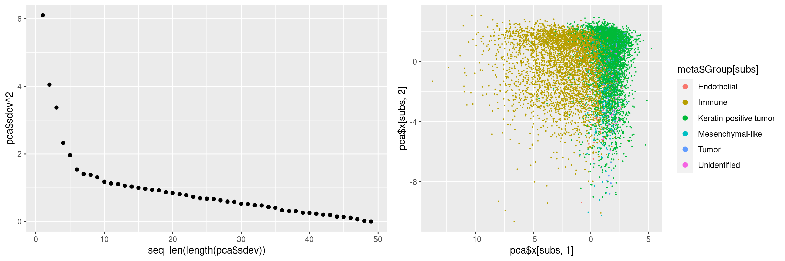
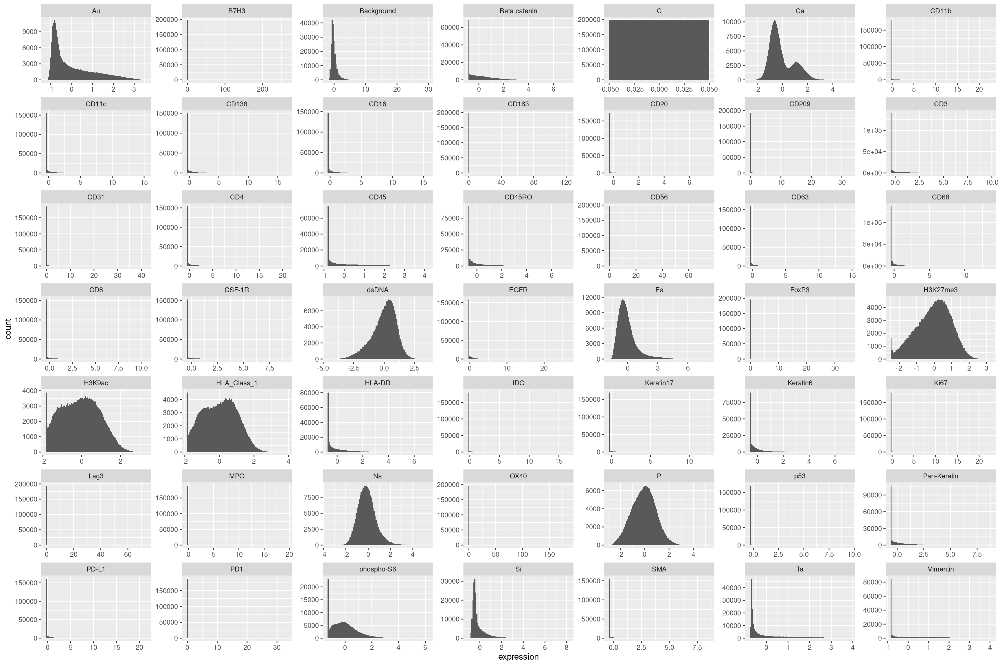
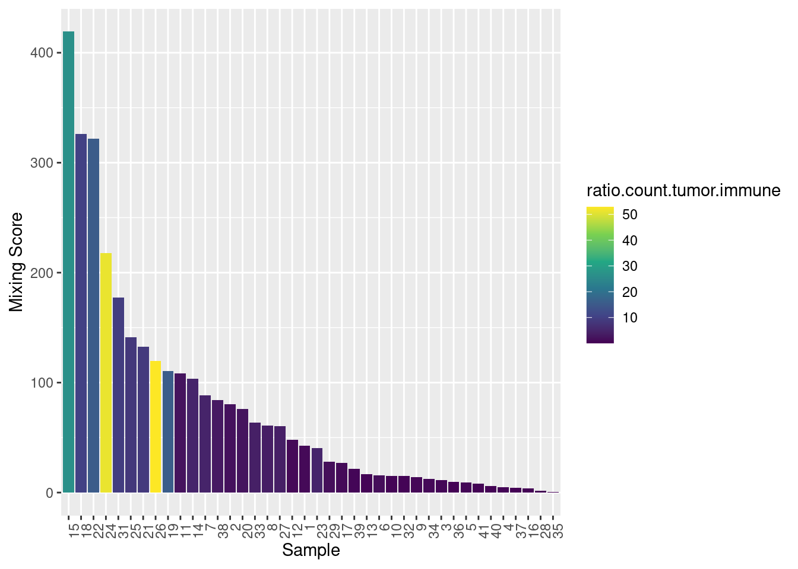
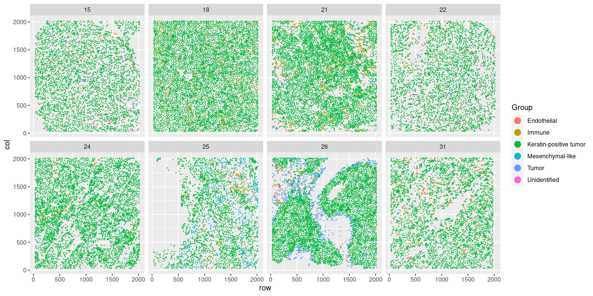
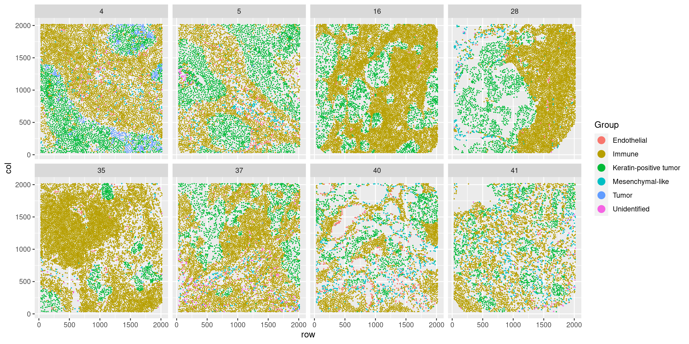
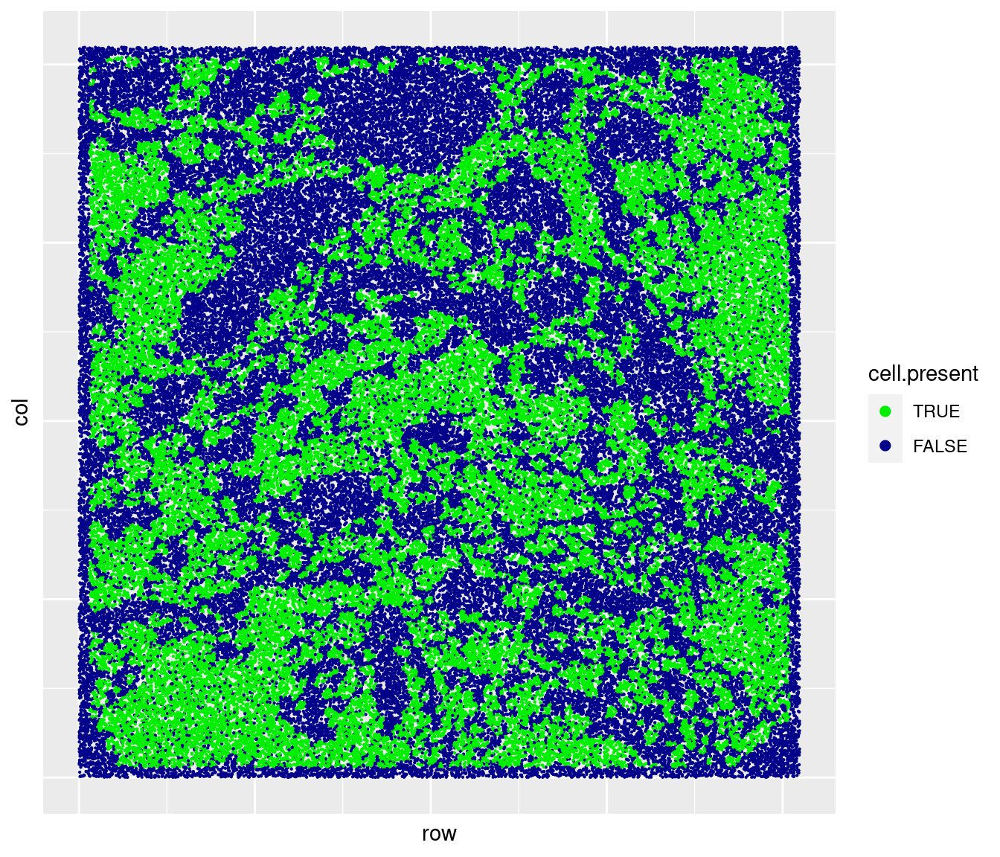
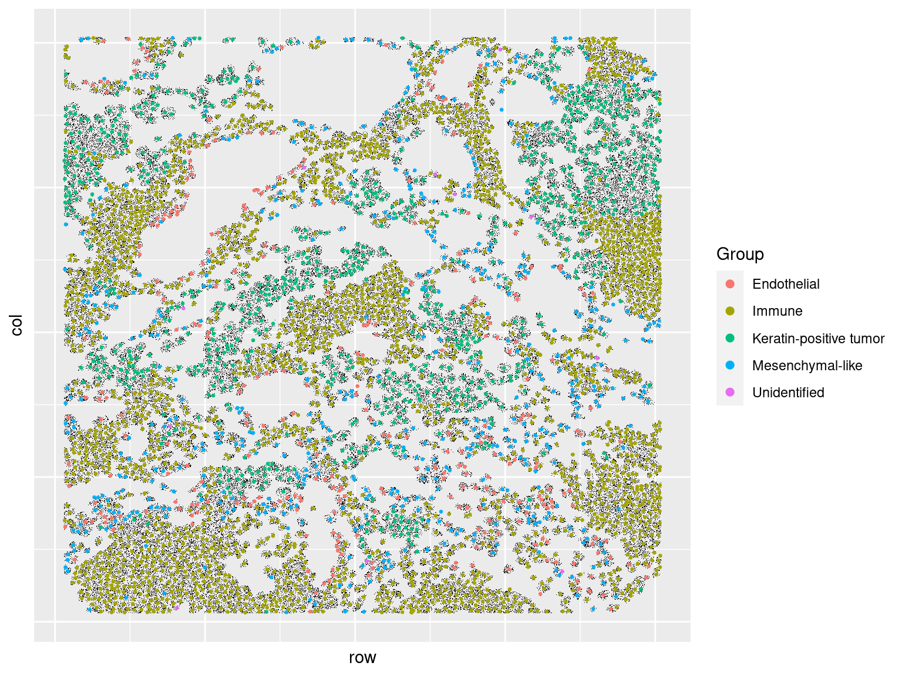
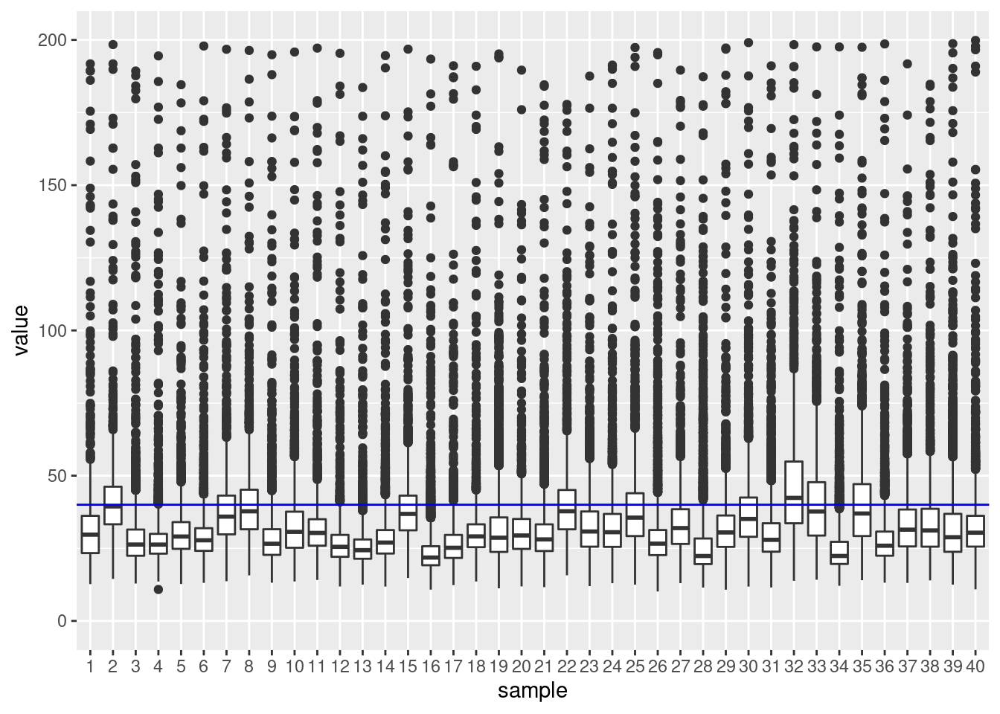

Exploratory Data Analysis MIBI
Last updated: 2021-11-05
Checks: 6 1
Knit directory: benchmark/
This reproducible R Markdown analysis was created with workflowr (version 1.6.2). The Checks tab describes the reproducibility checks that were applied when the results were created. The Past versions tab lists the development history.
Great! Since the R Markdown file has been committed to the Git repository, you know the exact version of the code that produced these results.
Great job! The global environment was empty. Objects defined in the global environment can affect the analysis in your R Markdown file in unknown ways. For reproduciblity it’s best to always run the code in an empty environment.
The command set.seed(20211105) was run prior to running the code in the R Markdown file. Setting a seed ensures that any results that rely on randomness, e.g. subsampling or permutations, are reproducible.
Great job! Recording the operating system, R version, and package versions is critical for reproducibility.
Nice! There were no cached chunks for this analysis, so you can be confident that you successfully produced the results during this run.
Using absolute paths to the files within your workflowr project makes it difficult for you and others to run your code on a different machine. Change the absolute path(s) below to the suggested relative path(s) to make your code more reproducible.
| absolute | relative |
|---|---|
| ~/Saez/workflowr_projects/benchmark | . |
Great! You are using Git for version control. Tracking code development and connecting the code version to the results is critical for reproducibility.
The results in this page were generated with repository version ba02018. See the Past versions tab to see a history of the changes made to the R Markdown and HTML files.
Note that you need to be careful to ensure that all relevant files for the analysis have been committed to Git prior to generating the results (you can use wflow_publish or wflow_git_commit). workflowr only checks the R Markdown file, but you know if there are other scripts or data files that it depends on. Below is the status of the Git repository when the results were generated:
Ignored files:
Ignored: data/coord.RDS
Ignored: data/graph.clusters.RDS
Ignored: data/mibi_benchmark/
Ignored: data/mibi_cellData.csv
Ignored: data/mibi_coldata.RDS
Ignored: data/mibi_earth.RDS
Ignored: data/mibi_expression.RDS
Ignored: data/mibi_lmbag.RDS
Ignored: data/mibi_misty_views.RDS
Ignored: data/mibi_patient_class.csv
Ignored: data/mibi_ranger.RDS
Ignored: data/mibi_rowdata.RDS
Ignored: data/mibi_tumor.immune.contacts.RDS
Untracked files:
Untracked: data/mibi_mmc2.xlsx
Untracked: data/mibi_tiffs/
Untracked: results/
Note that any generated files, e.g. HTML, png, CSS, etc., are not included in this status report because it is ok for generated content to have uncommitted changes.
These are the previous versions of the repository in which changes were made to the R Markdown (analysis/mibi_prep.Rmd) and HTML (docs/mibi_prep.html) files. If you’ve configured a remote Git repository (see ?wflow_git_remote), click on the hyperlinks in the table below to view the files as they were in that past version.
| File | Version | Author | Date | Message |
|---|---|---|---|---|
| Rmd | 00e1725 | schae211 | 2021-11-05 | added tutorial |
| Rmd | 3bc82f0 | schae211 | 2021-11-05 | initial analysis |
Set up
Messages will be hidden and the output collapsed to make the Rmd more clear.
knitr::opts_chunk$set(echo = TRUE)
knitr::opts_knit$set(root.dir = "~/Saez/workflowr_projects/benchmark")Loaded Packages.
suppressPackageStartupMessages(library(mistyR))
suppressPackageStartupMessages(library(future))
suppressPackageStartupMessages(library(tidyverse))
suppressPackageStartupMessages(library(factoextra))
plan("multisession", workers=14)Loading and Processing Data
The columns Group and ImmuneGroup in the cell metadata are translated from numbers to their actual meaning.
input <- read_csv("data/mibi_cellData.csv", show_col_types=FALSE)
# See description in Readme
group.trans <- c("1" = "Unidentified", "2" = "Immune", "3" = "Endothelial",
"4" = "Mesenchymal-like", "5" = "Tumor",
"6" = "Keratin-positive tumor")
immune.group.trans <- c("0" = "Non-Immune?", "1" = "Tregs", "2" = "CD4 T", "3" = "CD8 T",
"4" = "CD3 T", "5" = "NK", "6" = "B",
"7" = "Neutrophils", "8" = "Macrophages",
"9" = "DC", "10" = "DC/Mono", "11" = "Mono/Neu",
"12" = "Other immune")
raw_data <- input %>%
mutate(Group = group.trans[as.character(Group)]) %>%
mutate(immuneGroup = immune.group.trans[as.character(immuneGroup)])
raw_data %>% slice_head(n=6)Next we add the coordinates of the cells.
Doing it in R takes quite some time but offers more control than the center of mass function in scipy.
if ("coord.RDS" %in% list.files("data")) {
coord <- readRDS("data/coord.RDS")
} else {
library(tiff)
lbs <- c(1:29, 31:41)
coord <- furrr::future_map_dfr(lbs, function(id) {
print(id)
# Read in raw matrix (in tiff format)
tiff <- readTIFF(paste0("/home/philipp/data/saez/p", id, "_labeledcellData.tiff"),
as.is = TRUE)
seq.rows <- seq_len(nrow(tiff))
seq.cols <- seq_len(ncol(tiff))
# important: map over all unique values here! (but I removed 1 and 2)
cell.ids <- unique(as.vector(tiff))[-which(unique(as.vector(tiff)) %in% c(0,1))]
map_dfr(cell.ids, function(i) {
if (i %% 100 == 0) print(i)
# Convert to binary matrix with TRUE and FALSE
binary <- (tiff == i)
s <- sum(binary)
# Calculate center of mass
c(id = id,
i = i,
x.center = sum(seq.rows * rowSums(binary)) / s,
y.center = sum(seq.cols * colSums(binary)) / s
)
})
})
saveRDS(coord, file = "data/coord.RDS")
}Then, join the coordinates with the meta data.
data <- raw_data %>%
inner_join(coord, by = c("SampleID" = "id",
"cellLabelInImage" = "i")) %>%
rename(row = x.center, col = y.center)However, we have some coordiantes for cell IDs which are not in the meta data. For sample 40 there are for example 572 of those cell IDs which can be found in the tiff but not in the meta data. Maybe those spots turned out not be cells in the end (segmentation errors?). Or these are the cells with low expression across all markers (sum < 0.1).
dplyr::setdiff(
coord %>% filter(id == 40) %>% pull(i),
data %>% filter(SampleID == 40) %>% pull(cellLabelInImage)
) %>%
length()[1] 572Split the data into expression matrix and meta data.
meta <- data %>%
select(c(1:3, 53:59))
meta %>% slice_head(n=6)expr <- data %>%
select(4:52)
expr %>% slice_head(n=6)Meta Data
Cell Counts
Number of cells per sample. Curiously sample 30 is missing.
meta %>%
count(SampleID) %>%
ggplot() +
geom_bar(aes(x=SampleID, y=n), stat = "identity")
Number of “cell types” over all samples as annotated by the authors or the study. We mostly have tumor and immune cells. Keratin serves as a marker for cancer cells.
meta %>%
count(Group) %>%
arrange(desc(n))Next we will have a closer look at the immune populations. And according to the number of cells present, macrophages and T-cells are the major players, followed by B-cells.
meta %>%
count(immuneGroup) %>%
arrange(desc(n))Patient/Sample Metadata
Patient data provided with the raw data.
patient.info <- read_csv("data/mibi_patient_class.csv",
col_names = c("SampleID", "Classification"),
show_col_types=FALSE)
patient.info %>% slice_head(n=6)patient.info.paper <- readxl::read_xlsx("data/mibi_mmc2.xlsx",
skip = 1, col_names = TRUE)
patient.info.paper %>% slice_head(n=6)Cell Annotation
How were the cells actually annotated? In the paper they used hierachical clustering (FlowSOM). Here we will only look at the first two principal components.
When looking at the first two principal components, we see quite a clear distinction between tumor and immune cells. (Random subsetting used to reduce overplotting).
pca <- stats::prcomp(expr)
subs <- sample(nrow(pca$x), .05*nrow(pca$x))
p1 <- ggplot() +
geom_point(aes(x=seq_len(length(pca$sdev)), y = pca$sdev^2))
p2 <- ggplot() +
geom_point(aes(x=pca$x[subs,1], pca$x[subs,2],
color = meta$Group[subs]), size = 0.1) +
guides(colour = guide_legend(override.aes = list(size = 2)))
gridExtra::grid.arrange(p1, p2, ncol=2)
Also for the sake of it the will cluster the cells using the louvain algorithm (graph-based). See the heatmap of the marker distribution accross the clusters below.
if ("graph.clusters.RDS" %in% list.files("data")) {
graph.clusters <- readRDS("data/graph.clusters.RDS")
} else {
# shared nearest neighbor graph
snn <- bluster::makeSNNGraph(pca$x[,1:20], k = 20)
# louvain clustering
graph.clusters <- igraph::cluster_louvain(snn)$membership
saveRDS(graph.clusters, "data/graph.clusters.RDS")
}
# Making Psuedobulks per cluster
expr.matrix <- as.matrix(
expr %>%
select(- c("Background", "P", "Si", "Au", "Na", "Ca", "Ta", "dsDNA",
"Fe"))
)
pseudobulk <- as.matrix(
map_dfr(unique(graph.clusters), function(i) {
colSums(expr.matrix[graph.clusters == i,])
})
)
rownames(pseudobulk) <- unique(graph.clusters)
# Plotting Heatmap
pheatmap::pheatmap(t(pseudobulk))
Count Data
Histograms per marker over all samples. We can see that that there is a huge variability in the expression of different markers. The measured entities other than proteins (Au, Background, Beta catentin, C, Ca, Fe, Si, Ta) were later excluded from the analysis with MISTy.
How were the “counts” normalized?
According to the readme.rtf the markers were normalized by dividing the counts by the cell size and transforming with arcsinh (inverse hyperbolic sine). Furthermore in the paper it is stated that after arcsinh transformation the markers were standard normalized.
expr %>%
pivot_longer(cols = everything(), names_to = "marker", values_to = "expression") %>%
ggplot() +
geom_histogram(aes(x=expression), bins = 100) +
facet_wrap(~ marker, scales = "free")
Looking at the boxplot for the expression per marker over all samples, ignoring outliers which are defined as points which includes all points outside of median ± 1.5 * IQR (interquantile range), we can again see the broad variability.
expr %>%
pivot_longer(cols = everything(), names_to = "marker", values_to = "expression") %>%
ggplot() +
geom_boxplot(aes(y=expression, x=marker), outlier.shape = NA) +
theme(axis.text.x = element_text(angle = 90, vjust = 0.5, hjust=1)) +
coord_cartesian(ylim = c(-5, 5))
Focusing on the measured proteins, the most highly expressed species (according to the mean) are:
tibble(marker = colnames(expr), mean.expression = colMeans(expr)) %>%
filter(!(marker %in% c("Ta", "Au", "P", "Si", "C", "Na", "Ca", "Fe",
"dsDNA", "Backgrond"))) %>%
slice_max(mean.expression, n=6)Spatial Data
General
What is the scale? - 1 Pixel corresponds to about 390 nm.
We will first look at the spatial data from all samples in one plot. The cell types are annotated according to the information the authors of the original study provided.
As pointed out in their publication, one can see that there is a continuum between mixing of immune cells (yellow) and cancer tissue (green and blue). Either we can see a clear interface between both populations or they are totally mixed. This is actually associated with survival (see paper). Below this observation is quantified by calculating a similar mixing score as they did in the original publication.
meta %>%
ggplot() +
geom_point(aes(x = row, y = col, col = Group), size = .1) +
facet_wrap(~ SampleID) +
guides(colour = guide_legend(override.aes = list(size = 4)))
Mixing Score
Calculating the mixing score by counting for all immune cells in each sample how many contacts to they have to cancer cells divided by the contacts to other immune cells. The contacts are determined by Delaunay Triangulation and cells are only considered to be neighbors if the distance between them is below 40.
Importantly this mixing score is higher if there are more tumor cells than immune cells (as seen by the filling color of the barplot below, ratio.count.tumor.immune refers to the number of tumor cells divided by the number of immune cells).
(Remark: The authors of the paper used Haralick’s gray-level co-occurrence matrix to determine direct neighbors of each cell)
# Setting the distance threshold for what is considered a neighbor in the DT.
neighbor.thr <- 40
if ("mibi_tumor.immune.contacts.RDS" %in% list.files("data")) {
contacts.smp <- readRDS("data/mibi_tumor.immune.contacts.RDS")
} else {
coord.type.smp <- unique(meta$SampleID) %>%
set_names(paste0("s", .)) %>%
map(function(id) {
meta %>%
filter(meta$SampleID == id) %>%
select(row, col, Group) %>%
mutate(Group = ifelse(Group == "Keratin-positive tumor",
"Tumor", Group)) %>%
filter(Group %in% c("Tumor", "Immune")) %>%
mutate(id = seq_len(nrow(.)))
})
# helper function for getting direct neighbors
get_neighbors <- function(ddobj, id) {
dplyr::union(
ddobj$delsgs$ind1[which(ddobj$delsgs$ind2 == id)],
ddobj$delsgs$ind2[which(ddobj$delsgs$ind1 == id)]
)
}
contacts.smp <- coord.type.smp %>%
set_names() %>%
map_dfr(function(smp) {
delaunay <- deldir::deldir(as.data.frame(smp %>% select(row, col)))
dists <- distances::distances(as.data.frame(smp %>% select(row, col)))
ids.to.map <- smp %>% filter(Group == "Immune") %>% pull(id)
map(ids.to.map, function(i) {
alln <- get_neighbors(delaunay, i)
actualn <- alln[which(dists[alln, i] <= neighbor.thr)]
smp %>%
filter(id %in% actualn) %>%
pull(Group)
}) %>%
unlist %>%
table
})
}
meta %>%
group_by(SampleID) %>%
count(Group) %>%
pivot_wider(names_from = Group, values_from=n, names_prefix = "Count.") %>%
cbind(contacts.smp) %>%
mutate(ratio.tumor.immune = as.vector(Tumor/Immune * 100)) %>%
rename("Count.Keratin.positive.Tumor" = "Count.Keratin-positive tumor") %>%
replace(is.na(.), 0) %>%
mutate(Count.Tumor.Total = Count.Keratin.positive.Tumor + Count.Tumor) %>%
mutate(ratio.count.tumor.immune = Count.Tumor.Total / Count.Immune) %>%
ggplot() +
geom_bar(aes(x=reorder(SampleID, -ratio.tumor.immune),
y=ratio.tumor.immune,
fill=ratio.count.tumor.immune),
stat="identity") +
theme(axis.text.x = element_text(angle = 90, hjust = 1)) +
labs(x = "Sample", y = "Mixing Score") +
scale_fill_viridis_c()
Looking at the samples with the top mixing score, namely 15, 18, 22, 24, 31, 25, 21, 26
meta %>%
filter(SampleID %in% c(15, 18, 22, 24, 31, 25, 21, 26)) %>%
ggplot() +
geom_point(aes(x = row, y = col, col = Group), size = .1) +
facet_wrap(~ SampleID, ncol = 4) +
guides(colour = guide_legend(override.aes = list(size = 4)))
Looking at the samples with the top mixing score, namely 15, 18, 22, 24, 31, 25, 21, 26
meta %>%
filter(SampleID %in% c(15, 18, 22, 24, 31, 25, 21, 26)) %>%
ggplot() +
geom_point(aes(x = row, y = col, col = Group), size = .1) +
facet_wrap(~ SampleID, ncol = 4) +
guides(colour = guide_legend(override.aes = list(size = 4)))
Looking at the samples with the lowest mixing score, namely 35, 28, 16, 37, 4, 40, 41, 5.
meta %>%
filter(SampleID %in% c(35, 28, 16, 37, 4, 40, 41, 5)) %>%
ggplot() +
geom_point(aes(x = row, y = col, col = Group), size = .1) +
facet_wrap(~ SampleID, ncol = 4) +
guides(colour = guide_legend(override.aes = list(size = 4)))
And we can see that those mixing scores resemble exactly what we see in the images.
Sample 40
Looking more closely at sample 40 to make sure that the preprocessing went right. First, we will look at the cells only using their calculated center of mass.
meta %>%
filter(SampleID == 40) %>%
ggplot() +
geom_point(aes(x = row, y = col, col = Group), size=.4) +
guides(colour = guide_legend(override.aes = list(size = 2)))
Furthermore, we will look at the tiff.
library(tiff)
id = 40
tiff <- readTIFF(paste0("data/mibi_tiffs/p",
id, "_labeledcellData.tiff"), as.is = TRUE)First, the binary tiff, meaning all values that there not 0 or 1 (i.e. a cell was detected).
# get coordinates for where there was a cell detected (=: binary)
binary <- apply(tiff, c(1,2), function(n) !(n %in% c(0,1)))
binary.df <- as.data.frame(binary)
rownames(binary.df) <- seq_len(nrow(binary))
colnames(binary.df) <- seq_len(ncol(binary))
df <- binary.df %>%
rownames_to_column(var = "row") %>%
pivot_longer(cols = !(row), names_to = "col") %>%
mutate(row = as.numeric(row), col = as.numeric(col))
subs <- sample(nrow(df), .03 * nrow(df))
df %>%
slice(n = subs) %>%
mutate(cell.present = value) %>%
ggplot() +
geom_point(aes(x=row, y=col, col=cell.present), size=.1) +
theme(
axis.text.x = element_blank(),
axis.text.y = element_blank(),
axis.ticks = element_blank()) +
scale_colour_manual(values = c("TRUE" = "green2",
"FALSE" = "blue4")) +
guides(colour = guide_legend(override.aes = list(size = 2)))
Second, we will visualize the tiff and the labeled center of mass together. And on this scale the result actually looks quite nice.
s.40 <- meta %>%
filter(SampleID == 40)
tiff.40 <- df %>%
filter(value) %>%
slice_sample(., n = nrow(.)/10)
ggplot() +
geom_point(data = tiff.40, aes(x=row, y=col), col="black",
size = 0.1, stroke = 0, shape = 16) +
geom_point(data = s.40, aes(x=row, y=col, col=Group), size = .5) +
theme(
axis.text.x = element_blank(),
axis.text.y = element_blank(),
axis.ticks = element_blank()) +
guides(colour = guide_legend(override.aes = list(size = 2)))
To qualitatively assess the performance of the segmentation we will furthermore look at a close up of sample 40, more specifically the region from row 0 to row 600 and from col 1448 to col 2048. And we can see that the center of mass (colored point) mostly matches the cell boundaries, but not always!
c.max <- dim(binary)[1]
top_left <- list(row = 0, col = c.max)
bottom_right <- list(row = 600, col = c.max-600)
# get the unique coordinates for each cell
tiff.df <- as.data.frame(tiff)
rownames(tiff.df) <- seq_len(nrow(tiff))
colnames(tiff.df) <- seq_len(ncol(tiff))
tiff.df.plot <- tiff.df %>%
rownames_to_column(var = "row") %>%
pivot_longer(cols = !(row), names_to = "col") %>%
mutate(row = as.numeric(row), col = as.numeric(col)) %>%
filter(!(value %in% c(0, 1))) %>%
# how to get only entry for each unique value
group_by(value) %>%
filter(row_number()==1) %>%
ungroup()
s.40 <- meta %>%
filter(SampleID == 40) %>%
filter(row >= top_left$row, row <= bottom_right$row,
col >= bottom_right$col, col <= top_left$col)
tiff.40 <- df %>%
filter(value) %>%
filter(row >= top_left$row, row <= bottom_right$row,
col >= bottom_right$col, col <= top_left$col)
labels.40 <- tiff.df.plot %>%
filter(row >= top_left$row, row <= bottom_right$row,
col >= bottom_right$col, col <= top_left$col)
ggplot() +
geom_point(data = tiff.40, aes(x=row, y=col), col="black",
size = 0.1, stroke = 0, shape = 16) +
geom_point(data = s.40, aes(x=row, y=col, col=Group), size = 3) +
theme(
axis.text.x = element_blank(),
axis.text.y = element_blank(),
axis.ticks = element_blank())
Here are the corresponding IDs for comparison to the meta data.
ggplot(labels.40) +
geom_label(aes(x = row, y = col, label = value), size = 2.5)
Merging Metadata
Merging the meta data with the mixing score and some other measures.
# Generating Sample Meta Data
immune.counts <- meta %>%
group_by(SampleID) %>%
count(Group) %>%
pivot_wider(names_from = Group, values_from = n,
names_prefix = "Count.")
total.counts <- meta %>%
count(SampleID) %>%
rename(Count.Total = n)
mixing.score <- round(
contacts.smp %>%
mutate(ratio.tumor.immune = Tumor/Immune * 100) %>%
pull(ratio.tumor.immune),
2)
sample.meta <- patient.info %>%
filter(SampleID != 30) %>%
mutate(ratio.tumor.immune = as.vector(mixing.score)) %>%
inner_join(immune.counts, by = "SampleID") %>%
inner_join(total.counts, by = "SampleID") %>%
# see paper Figure 3, Panel C
mutate(Classification =
case_when(Classification == 0 ~ "mixed",
Classification == 1 ~ "compartimentalized",
Classification == 2 ~ "cold")) %>%
mutate(SampleID = as.character(SampleID)) %>%
left_join(patient.info.paper, by = c("SampleID" = "InternalId"))
sample.meta %>% slice_head(n=6)Preparation
Select only proteins from the expression matrix and check for NAs.
Also we need to check the variance for each marker in each same and exclude the marker if the variance is 0. The same is true for markers whose number of unique values is lower than the desired number of cv folds (here 10).
cv.folds = 10
expr.smp <- unique(meta$SampleID) %>%
set_names(paste0("s", .)) %>%
map(function(id) {
ret.expr <- expr %>%
filter(meta$SampleID == id) %>%
# Select only proteins
select(11:47)
# Check for zero variance (otherwise MISTy throws an error)
target.var <- apply(ret.expr, 2, stats::sd, na.rm = TRUE)
ret.expr <- ret.expr %>% select(-names(which(target.var == 0)))
# Check for how many unique values
target.unique <- colnames(ret.expr) %>%
purrr::set_names() %>%
purrr::map_int(~ length(unique(ret.expr %>% pull(.x))))
ret.expr <- ret.expr %>% select(
names(target.unique[target.unique > cv.folds])
)
colnames(ret.expr) <- make.names(colnames(ret.expr))
ret.expr
})
# Check NAs for sample 40
sum(map_int(names(expr.smp$s40), ~ sum(is.na(expr.smp$s40[.x]))))
[1] 0
coord.smp <- unique(meta$SampleID) %>%
set_names(paste0("s", .)) %>%
map(function(id) {
meta %>%
filter(meta$SampleID == id) %>%
select(row, col)
})
# Check NAs for sample 40
sum(map_int(names(coord.smp$s40), ~ sum(is.na(coord.smp$s40[.x]))))
[1] 0
nrow(expr.smp$s40) == nrow(coord.smp$s40)
[1] TRUEHelper function to calculate distances to the neighbors.
# helper function for nearest neighbors
dist_k_nn <- function(sample, k) {
nn <- RANN::nn2(sample, eps=0.0, k = k)
map_dbl(seq_len(nrow(sample)), function(n) {
mean(nn$nn.dists[n, ])
})
}
# helper function for getting direct neighbors
get_neighbors <- function(ddobj, id) {
dplyr::union(
ddobj$delsgs$ind1[which(ddobj$delsgs$ind2 == id)],
ddobj$delsgs$ind2[which(ddobj$delsgs$ind1 == id)]
)
}First we will look at the distribution of the mean distances to the direct neighbors (as determined by the delauney triangulation) to get a feeling for which cutoff value should be used for the generation of the juxtaview. The corresponding distribution is shown below. (in blue the cutoff - 40 pixels (15.6 microns) - which was used in the end).
# mean distance to the direct neighbors for each cell
mean.dists.direct.neighbors <- map(coord.smp, function(smp) {
delaunay <- deldir::deldir(as.data.frame(smp))
dists <- distances::distances(as.data.frame(smp))
map_dbl(seq_len(nrow(smp)), function(id) {
nn <- get_neighbors(delaunay, id)
mean(dists[nn, id])
})
})
stat.per.sample <- map2_dfr(mean.dists.direct.neighbors,
seq_len(length(mean.dists.direct.neighbors)),
function(list, smp) {
data.frame(sample = smp, value = list)
})
# histogram
ggplot(data.frame(dist = mean.dists.direct.neighbors %>% unlist)) +
geom_histogram(aes(dist), bins = 100) +
lims(x = c(0,100)) +
geom_vline(xintercept = 40, col = "blue")Warning: Removed 1331 rows containing non-finite values (stat_bin).Warning: Removed 2 rows containing missing values (geom_bar).
Summary statistics:
data.frame(value = mean.dists.direct.neighbors %>% unlist) %>%
summarise(mean = mean(value),
median = median(value),
q25 = quantile(value, 0.25),
q75 = quantile(value, 0.75),
min = min(value),
max = max(value))However, a more detailed look across the sample (boxplot) shows that the cutoff may be too low for certain samples. It may be good to increase this threshold to 50.
# boxplot
stat.per.sample %>%
mutate(sample = factor(sample)) %>%
ggplot() +
geom_boxplot(aes(x=sample, y=value)) +
geom_hline(yintercept = 40, col="blue") +
lims(y = c(0, 200))Warning: Removed 356 rows containing non-finite values (stat_boxplot).
Furthermore we will look at the distribution of the mean distances to the 10 -, 20 -, 40 -, and 80 closest cells to get a feeling for which cutoff will be used to generate the paraview (in blue the cutoff - 120 pixels (46.8 microns) - which was used in the end).
neighbor.dists <- map_dfr(coord.smp, function(smp) {
c(10, 20, 40, 80) %>%
set_names() %>%
map_dfc(function(k) {
dist_k_nn(smp, k)
}) %>%
set_names(paste0("dist_to_", c("10", "20", "40", "80")))
})
neighbor.dists %>%
pivot_longer(cols = everything()) %>%
mutate(name = factor(name,
levels = paste0("dist_to_", c("10", "20", "40", "80")))) %>%
ggplot() +
geom_histogram(aes(value), bins = 100) +
facet_wrap(~ name) +
lims(x = c(0, 200)) +
geom_vline(xintercept = 120, col = "blue")Warning: Removed 490 rows containing non-finite values (stat_bin).Warning: Removed 8 rows containing missing values (geom_bar).
Summary statistics:
neighbor.dists %>%
pivot_longer(cols = everything()) %>%
group_by(name) %>%
summarise(mean = mean(value),
median = median(value),
q25 = quantile(value, 0.25),
q75 = quantile(value, 0.75),
min = min(value),
max = max(value))Generating the MISTy views
Based on the data above, the following parameters (thresholds) were used to run MISTy: * Juxtaview: threshold 40, * Paraview: theshold 120, zone of indifference: 40
if ("mibi_misty_views.RDS" %in% list.files("data")) {
misty.views.smp <- readRDS("data/mibi_misty_views.RDS")
} else {
misty.views.smp <- map(expr.smp, coord.smp, function(expr, coord) {
# Create views and run MISTy
create_initial_view(expr) %>%
add_juxtaview(positions = coord, neighbor.thr = 40) %>%
add_paraview(positions = coord, l = 120, zoi = 40)
})
names(misty.views.smp) <- names(expr.smp)
saveRDS(misty.views.smp, "data/misty_views_smp.RDS")
}Save data
saveRDS(expr, "data/mibi_expression.RDS")
saveRDS(meta, "data/mibi_rowdata.RDS")
saveRDS(sample.meta, "data/mibi_coldata.RDS")
saveRDS(misty.views.smp, "data/mibi_misty_views.RDS")
sessionInfo()R version 4.1.2 (2021-11-01)
Platform: x86_64-pc-linux-gnu (64-bit)
Running under: Ubuntu 20.04.3 LTS
Matrix products: default
BLAS: /usr/lib/x86_64-linux-gnu/blas/libblas.so.3.9.0
LAPACK: /usr/lib/x86_64-linux-gnu/lapack/liblapack.so.3.9.0
locale:
[1] LC_CTYPE=en_US.UTF-8 LC_NUMERIC=C
[3] LC_TIME=en_US.UTF-8 LC_COLLATE=en_US.UTF-8
[5] LC_MONETARY=en_US.UTF-8 LC_MESSAGES=en_US.UTF-8
[7] LC_PAPER=en_US.UTF-8 LC_NAME=C
[9] LC_ADDRESS=C LC_TELEPHONE=C
[11] LC_MEASUREMENT=en_US.UTF-8 LC_IDENTIFICATION=C
attached base packages:
[1] stats graphics grDevices utils datasets methods base
other attached packages:
[1] tiff_0.1-8 factoextra_1.0.7 forcats_0.5.1 stringr_1.4.0
[5] dplyr_1.0.7 purrr_0.3.4 readr_2.0.2 tidyr_1.1.4
[9] tibble_3.1.5 ggplot2_3.3.5 tidyverse_1.3.1 future_1.22.1
[13] mistyR_1.3.1 workflowr_1.6.2
loaded via a namespace (and not attached):
[1] fs_1.5.0 lubridate_1.8.0 bit64_4.0.5 RColorBrewer_1.1-2
[5] httr_1.4.2 rprojroot_2.0.2 tools_4.1.2 backports_1.3.0
[9] bslib_0.3.1 utf8_1.2.2 R6_2.5.1 DBI_1.1.1
[13] colorspace_2.0-2 withr_2.4.2 tidyselect_1.1.1 gridExtra_2.3
[17] bit_4.0.4 compiler_4.1.2 git2r_0.28.0 cli_3.0.1
[21] rvest_1.0.1 xml2_1.3.2 labeling_0.4.2 sass_0.4.0
[25] scales_1.1.1 distances_0.1.8 digest_0.6.28 rmarkdown_2.11
[29] pkgconfig_2.0.3 htmltools_0.5.2 parallelly_1.28.1 dbplyr_2.1.1
[33] fastmap_1.1.0 highr_0.9 rlang_0.4.12 readxl_1.3.1
[37] rstudioapi_0.13 jquerylib_0.1.4 generics_0.1.0 farver_2.1.0
[41] jsonlite_1.7.2 vroom_1.5.5 magrittr_2.0.1 Rcpp_1.0.7
[45] munsell_0.5.0 fansi_0.5.0 lifecycle_1.0.1 stringi_1.7.5
[49] whisker_0.4 yaml_2.2.1 grid_4.1.2 parallel_4.1.2
[53] listenv_0.8.0 promises_1.2.0.1 ggrepel_0.9.1 crayon_1.4.1
[57] deldir_1.0-5 haven_2.4.3 hms_1.1.1 knitr_1.36
[61] pillar_1.6.3 codetools_0.2-18 reprex_2.0.1 glue_1.4.2
[65] evaluate_0.14 modelr_0.1.8 vctrs_0.3.8 tzdb_0.1.2
[69] httpuv_1.6.3 cellranger_1.1.0 RANN_2.6.1 gtable_0.3.0
[73] assertthat_0.2.1 xfun_0.26 broom_0.7.9 later_1.3.0
[77] viridisLite_0.4.0 pheatmap_1.0.12 globals_0.14.0 ellipsis_0.3.2